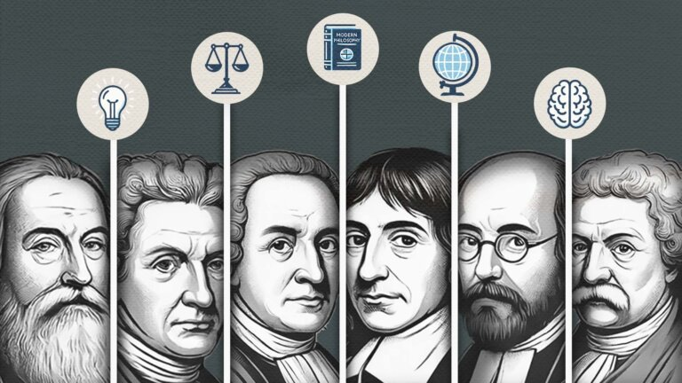

Filosofía Moderna (S. XVII - XVIII)
¿Que es?
La filosofía moderna es una de las etapas importantes en la evolución del pensamiento humano, ya que representa una ruptura con las ideas tradicionales de la Edad Media, iniciando una nueva forma de comprender el mundo.
Evento Clave:
Revolución Científica:
René Descartes formula "Pienso, luego existo". Se debate entre el Racionalismo y el Empirismo.
La Ilustración:
Movimiento intelectual que promueve la razón, la libertad y la crítica al absolutismo, liderado por pensadores como Voltaire, Montesquieu y Rousseau.
Racionalismo Continental:
Baruch Spinoza y Gottfried Leibniz desarrollan sistemas metafísicos basados en la razón pura, la sustancia y la lógica.
Empirismo Británico:
John Locke y David Hume argumentan que todo conocimiento proviene de la experiencia sensorial, rechazando las ideas innatas.
